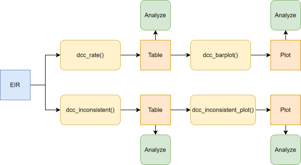
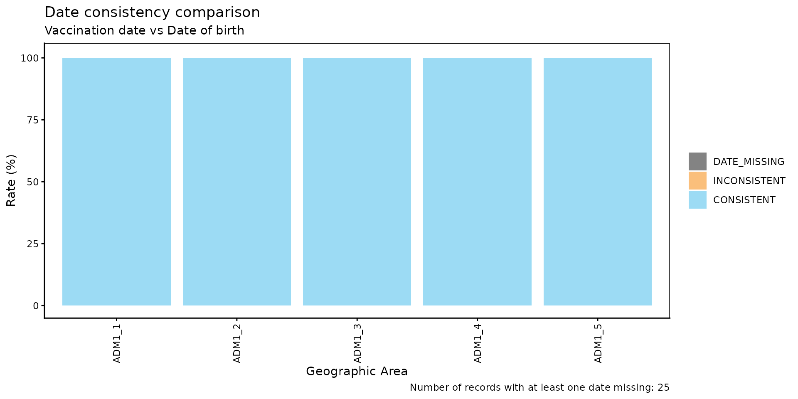
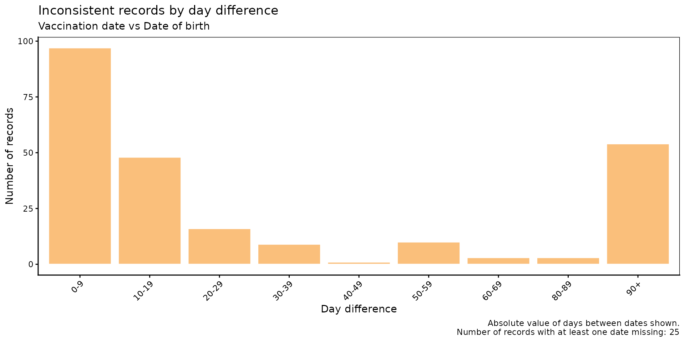
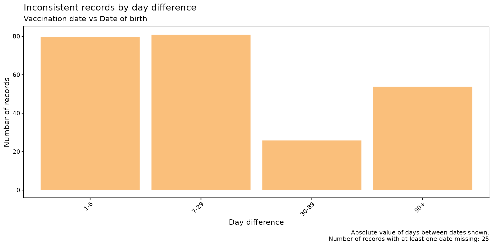

Date Consistency Comparison
PAHO/CIM
June 1, 2026
Source:vignettes/articles/en/date_consistency_comparison_en.Rmd
date_consistency_comparison_en.RmdRationale
Electronic Immunization Registries (EIRs) often contain date fields that are logically constrained relative to one another. A common example is the relationship between a vaccination date and a date of birth: a vaccination event cannot occur before a person is born. When such violations exist in the data, they indicate data entry errors or record linkage issues that can bias downstream analyses.
The date consistency comparison module allows users to systematically identify, quantify, and visualize these inconsistencies between any two date variables in the EIR.
Note
All functions used for date consistency comparison analyses within PAHOabc begin with the
dcc_prefix.
Glossary
Political Geographic Boundaries
Throughout this vignette, we will make reference to different levels of political geographic boundaries. These levels are defined by the country/territory and can have different names from country to country. PAHOabc is agnostic to these names and requires the user to recode their variable names to fit the PAHOabc structure.
Namely, PAHOabc can distinguish three administrative levels, which listed from top to bottom level are: ADM0, ADM1 and ADM2.
- ADM0: The country. This is the top-most administrative level.
- ADM1: The first geographic subdivision in the country. ADM0 contains several ADM1 subdivisions.
- ADM2: The second geographic subdivision in the country. Each ADM1 contains several ADM2 subdivisions.
Usage
Load Data
The functions in this module require your EIR dataset in the standard PAHOabc format.
EIR
The pahoabc::pahoabc.EIR data frame provides a
simulated, nominal-level table representing individual vaccination
events from an Electronic Immunization Registry (EIR). Each row
corresponds to a single vaccination act for a person.
pahoabc.EIR %>% head() %>% kable(caption = "Example Electronic Immunization Registry")| ID | date_birth | date_vax | ADM1_residence | ADM2_residence | ADM1_occurrence | ADM2_occurrence | dose |
|---|---|---|---|---|---|---|---|
| 191997 | 2023-08-08 | 2023-12-26 | ADM1_4 | ADM2_4_35 | ADM1_4 | ADM2_4_35 | DTP2 |
| 212189 | 2023-12-20 | 2023-12-26 | ADM1_5 | ADM2_5_61 | ADM1_5 | ADM2_5_61 | BCG RN |
| 118063 | 2022-09-15 | 2023-12-26 | ADM1_2 | ADM2_2_5 | ADM1_2 | ADM2_2_5 | DTP1 |
| 118063 | 2022-09-15 | 2023-12-26 | ADM1_2 | ADM2_2_5 | ADM1_2 | ADM2_2_5 | YFV1 |
| 130751 | 2022-10-27 | 2023-12-12 | ADM1_5 | ADM2_5_55 | ADM1_5 | ADM2_5_55 | YFV1 |
| 136532 | 2021-09-21 | 2023-12-26 | ADM1_3 | ADM2_3_12 | ADM1_3 | ADM2_3_12 | SRP1 |
-
ID: Unique person identification number. -
date_birth: Date of birth of person. -
date_vax: Date of vaccination event. -
ADM1_residence/ADM2_residence: First and second geographic administrative levels of residence. -
dose: Combined variable representing vaccine type and dose number (e.g., DTP1).
Date Consistency Comparison Analysis
Expected Workflow
The dcc_ suite contains four functions that work
together:
-
dcc_rate()— computes consistency rates aggregated by geographic level. -
dcc_barplot()— visualizes the output ofdcc_rate()as a stacked bar chart. -
dcc_inconsistent()— lists individual inconsistent and missing records with their day difference. -
dcc_inconsistent_plot()— visualizes the distribution of day differences for inconsistent records.
The figure below shows the expected workflow.

Step 1 — Compute consistency rates with dcc_rate()
dcc_rate() compares two date variables in the EIR and
returns, for each geographic unit, the count and percentage of records
that are CONSISTENT, INCONSISTENT, or
DATE_MISSING.
Here we check whether date_vax (date_1, the later date)
is consistent with date_birth (date_2, the earlier date) at
the ADM1 level.
rate_df <- dcc_rate(
data.EIR = pahoabc.EIR,
date_1 = "date_vax",
date_2 = "date_birth",
geo_level = "ADM1"
)
rate_df %>% kable(digits = 2, caption = "Date consistency rates by ADM1")| ADM1 | consistency | n | total | rate |
|---|---|---|---|---|
| ADM1_1 | CONSISTENT | 14046 | 14058 | 99.91 |
| ADM1_1 | DATE_MISSING | 2 | 14058 | 0.01 |
| ADM1_1 | INCONSISTENT | 10 | 14058 | 0.07 |
| ADM1_2 | CONSISTENT | 75128 | 75165 | 99.95 |
| ADM1_2 | INCONSISTENT | 37 | 75165 | 0.05 |
| ADM1_3 | CONSISTENT | 332868 | 333038 | 99.95 |
| ADM1_3 | DATE_MISSING | 22 | 333038 | 0.01 |
| ADM1_3 | INCONSISTENT | 148 | 333038 | 0.04 |
| ADM1_4 | CONSISTENT | 45797 | 45830 | 99.93 |
| ADM1_4 | DATE_MISSING | 1 | 45830 | 0.00 |
| ADM1_4 | INCONSISTENT | 32 | 45830 | 0.07 |
| ADM1_5 | CONSISTENT | 24583 | 24597 | 99.94 |
| ADM1_5 | INCONSISTENT | 14 | 24597 | 0.06 |
Step 2 — Visualize rates with dcc_barplot()
The output of dcc_rate() can be passed directly to
dcc_barplot() to produce a stacked bar chart showing the
breakdown of consistency categories per geographic unit.
dcc_barplot(
data = rate_df,
date_1_name = "Vaccination date",
date_2_name = "Date of birth"
)
Parameters accepted
-
data: Output ofdcc_rate(). -
date_1_name: Display label fordate_1in the plot subtitle. Default:"date 1". -
date_2_name: Display label fordate_2in the plot subtitle. Default:"date 2". -
within_ADM1: Character vector to filter to specific ADM1 units whengeo_level = "ADM2". Default:NULL. -
plot_missing: Boolean. IfTRUE(default),DATE_MISSINGrecords are shown as a separate bar segment so all bars sum to 100%.
Step 3 — Inspect individual inconsistent records with
dcc_inconsistent()
dcc_inconsistent() returns a record-level table of all
INCONSISTENT and DATE_MISSING entries,
including the day difference between the two dates.
inconsistent_df <- dcc_inconsistent(
data.EIR = pahoabc.EIR,
date_1 = "date_vax",
date_2 = "date_birth"
)
inconsistent_df %>% head(10) %>% kable(caption = "Sample of inconsistent and missing records")| ID | dose | date_birth | date_vax | consistency | diff |
|---|---|---|---|---|---|
| 90618 | BCG RN | 2022-12-21 | 2022-02-25 | INCONSISTENT | -299 days |
| 212688 | BCG RN | 2023-12-28 | 2023-12-02 | INCONSISTENT | -26 days |
| 90924 | BCG RN | 2022-03-06 | 2022-03-05 | INCONSISTENT | -1 days |
| 90984 | DTP2 | 2022-06-30 | 2022-04-27 | INCONSISTENT | -64 days |
| 90994 | BCG RN | 2022-02-20 | 2022-02-19 | INCONSISTENT | -1 days |
| 91235 | YFV1 | NA | 2022-06-13 | DATE_MISSING | NA days |
| 91441 | BCG RN | 2022-02-16 | 2022-02-10 | INCONSISTENT | -6 days |
| 91537 | BCG RN | 2022-04-02 | 2022-02-03 | INCONSISTENT | -58 days |
| 65055 | BCG RN | 2022-02-04 | 2022-02-03 | INCONSISTENT | -1 days |
| 92001 | BCG RN | 2022-03-17 | 2022-03-12 | INCONSISTENT | -5 days |
Parameters accepted
-
data.EIR: EIR data frame in PAHOabc format. -
date_1: Name of the date variable being checked. -
date_2: Name of the date variable checked against.
The diff column reports date_1 - date_2 in
days. Negative values indicate date_1 precedes
date_2 (i.e., the inconsistency). This table can be
exported for record-level correction workflows.
Step 4 — Visualize the distribution of day differences with
dcc_inconsistent_plot()
dcc_inconsistent_plot() produces a histogram of the
absolute day differences for inconsistent records,
grouped into customizable bins. This helps characterize the severity of
inconsistencies: small differences may reflect data entry typos, while
large differences suggest more systematic issues.
dcc_inconsistent_plot(
data.EIR = pahoabc.EIR,
date_1 = "date_vax",
date_2 = "date_birth",
date_1_name = "Vaccination date",
date_2_name = "Date of birth"
)
Parameters accepted
-
data.EIR: EIR data frame in PAHOabc format. -
date_1: Name of the date variable being checked. -
date_2: Name of the date variable checked against. -
date_1_name: Display label fordate_1in the plot subtitle. Default:"date 1". -
date_2_name: Display label fordate_2in the plot subtitle. Default:"date 2". -
day_groups: List ofc(lower, upper)numeric pairs defining the histogram bins. The last bin is always extended toInfand labelled"X+". Default: 10-day bins from 0 to 100.
To use custom bin widths — for example, finer resolution for small differences:
dcc_inconsistent_plot(
data.EIR = pahoabc.EIR,
date_1 = "date_vax",
date_2 = "date_birth",
date_1_name = "Vaccination date",
date_2_name = "Date of birth",
day_groups = list(c(0, 1), c(1, 7), c(7, 30), c(30, 90), c(90, 180))
)
Interpretation
The horizontal axis shows the number of days between inconsistent
dates. An investigation into the most common causes for the
inconsistencies in each bin should be performed. For example, records
with large differences can be caused by typos during data entry
(e.g. when a date is written as 2022-02-25 instead of
2022-12-25). But, they can also point to more serious
systematic problems.
Summary
The dcc_ module provides a complete pipeline for
assessing date consistency in EIR data. Starting from
dcc_rate() for a geographic overview, through
dcc_barplot() for visualization, to
dcc_inconsistent() for record-level inspection and
dcc_inconsistent_plot() for characterizing the magnitude of
errors, the suite equips data managers and public health analysts with
the tools needed to detect, quantify, and prioritize data quality
corrections before any downstream analysis.